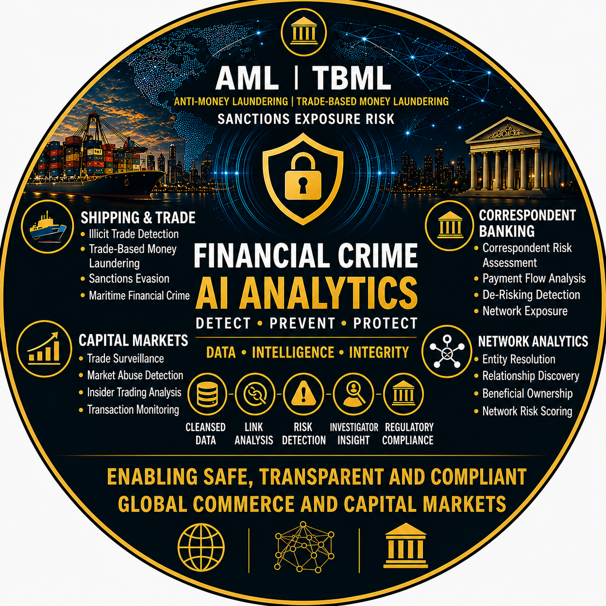

Financial Crime Transformation Portfolio
Financial Crime Transformation • Network Intelligence • Advanced Analytics • Artificial Intelligence
Building intelligence-led operating models for the future of Financial Crime Operations.
Explore the complete Financial Crime repository portfolio including analytics frameworks, network intelligence methodologies, AI-enabled operating models and transformation assets.
| Area | Coverage |
|---|---|
| Capability Domains | Threat Intelligence, Detection Strategy, Analytics, Network Intelligence, AI, Governance |
| Analytics Coverage | AML, TBML, Banking, Sanctions, Capital Markets |
| AI Capabilities | Investigator Copilot, Alert Triage, SAR Assistance |
| Transformation Focus | Strategy, Governance, Operating Models, Delivery |
The repositories within this portfolio are aligned to a Financial Crime Intelligence Platform framework that connects emerging threat intelligence, analytics, network intelligence, investigations, governance and transformation into a single operating model.
The objective is to transform emerging financial crime threats into operational capabilities that deliver measurable risk reduction, regulatory compliance and investigative effectiveness.
🔍 Click diagram to magnify. Press back or click X to return.
| Objective | Description |
|---|---|
| 🛡️ Protect the Institution | Identify and mitigate financial crime risk through intelligence-led capabilities |
| ⚖️ Meet Regulatory Obligations | Support AML, Sanctions, Fraud and Compliance requirements |
| 📈 Drive Risk Intelligence | Convert data into actionable intelligence and risk insights |
| 🔍 Detect Financial Crime | Enable effective detection, investigation and disruption of criminal activity |
| Capability | Coverage |
|---|---|
| 🧠 Threat Intelligence | Horizon Scanning, Threat Assessment, Emerging Typologies |
| 🕸️ Network Intelligence | Entity Resolution, Beneficial Ownership, Relationship Discovery |
| 📊 Analytics | Transaction Monitoring, TBML, Banking Analytics, Risk Scoring |
| 🤖 Artificial Intelligence | Investigator Copilots, Alert Summarisation, SAR Assistance |
| 🏛️ Governance | Explainability, Controls, Oversight and Risk Management |
| 🚀 Transformation | Operating Models, Roadmaps, Architecture and Delivery |
This framework serves as the architectural foundation for the repositories, methodologies and analytics assets contained within this portfolio.
I am a Financial Crime Transformation professional specialising in intelligence-led capability design across AML, Sanctions, Trade Finance, Correspondent Banking, Network Intelligence and Artificial Intelligence.
My experience spans Financial Crime Operations, Transaction Monitoring, Detection Strategy, Analytics, Network Intelligence, Operating Model Design and Enterprise Transformation programmes.
This portfolio demonstrates how intelligence, analytics, network intelligence, AI and governance can be integrated into modern Financial Crime operating models.
Rather than presenting isolated technologies or analytical solutions, the portfolio demonstrates how emerging threats can be translated into operational detection capabilities, investigative workflows and measurable transformation outcomes.
| Domain | Focus Areas |
|---|---|
| 🧠 Threat Intelligence | Horizon Scanning, Threat Assessment, Geopolitical Intelligence, Emerging Typologies |
| 🎯 Detection Strategy | Threat-to-Detection Mapping, Scenario Engineering, Coverage Assessment |
| 📊 Analytics | Transaction Monitoring, Trade Finance Analytics, Correspondent Banking Analytics, Risk Scoring |
| 🕸️ Network Intelligence | Entity Resolution, Relationship Discovery, Beneficial Ownership, Graph Analytics |
| 🤖 Artificial Intelligence | Investigator Copilots, Alert Summarisation, SAR Assistance, AI Governance |
| 🏛️ Governance | Explainability, Controls, Model Oversight |
| 🚀 Transformation | Operating Models, Business Cases, Roadmaps, Executive Strategy |
Researching emerging financial crime threats, horizon scanning techniques and future capability requirements to support intelligence-led transformation.
Designing network intelligence frameworks supporting entity resolution, beneficial ownership analysis, relationship discovery and graph-based investigations.
Development of analytics frameworks covering AML, Trade Finance, Correspondent Banking and Risk Scoring use cases.
Applying AI to investigation workflows, alert triage, case summarisation and investigator productivity.
| Repository | Purpose |
|---|---|
| Financial Crime Analytics Showcase | Visual showcase of analytics frameworks, typologies, network intelligence methodologies and AI-enabled operating models |
| Financial Crime Transformation Toolkit | Transformation, governance, architecture and delivery framework |
| Emerging Threat Intelligence | Horizon scanning, threat assessment and future capability research |
| AI Investigator Copilot | AI-enabled investigation support prototype |
| AML Alert Triage Prototype | Risk scoring and alert prioritisation prototype |
Financial Crime organisations are increasingly challenged by complex threat landscapes, evolving regulatory expectations and rapidly emerging technologies.
The future operating model is intelligence-led, analytics-enabled and AI-assisted.
This portfolio explores how intelligence, detection strategy, analytics, network intelligence, investigations, governance and transformation can be connected into a coherent Financial Crime capability architecture.
This portfolio contains educational, conceptual and demonstration materials intended to illustrate Financial Crime transformation, analytics, network intelligence methodologies and AI-enabled operating models.
It does not contain client information, proprietary methodologies, production systems or confidential data.
📧 dan_hartwig@hotmail.com
🔗 LinkedIn
https://www.linkedin.com/in/dan-hartwig-financial-crime
💻 GitHub Repository Portfolio
https://github.com/dhartwig-fc
© 2026 Dan Hartwig | Financial Crime Transformation Portfolio